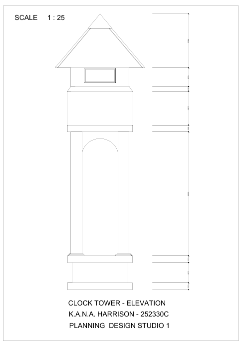
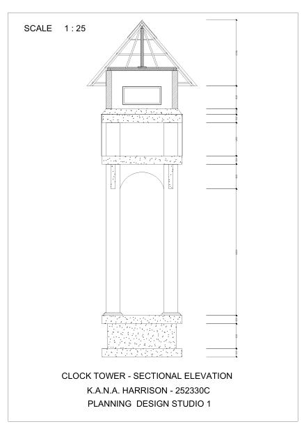
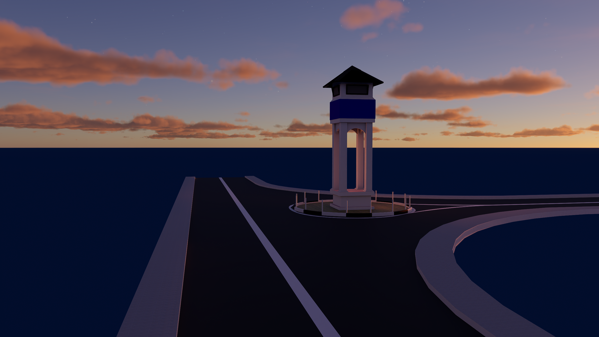
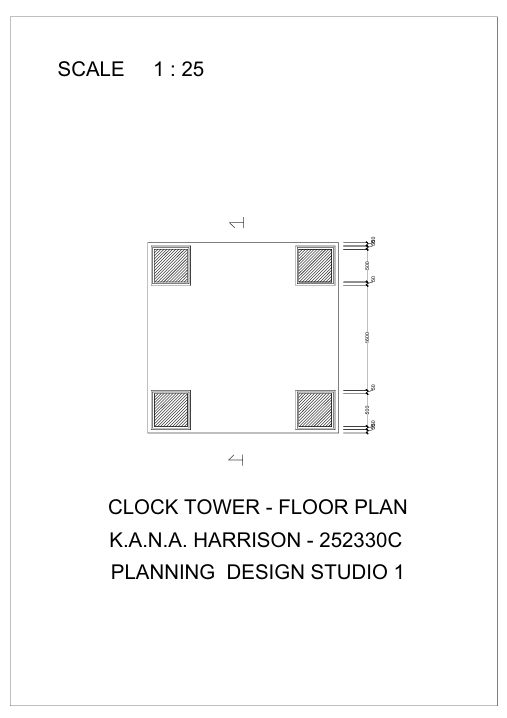
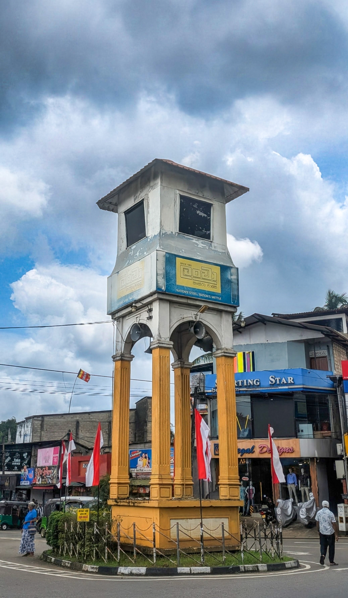

🕰️
RUWANWELLA CLOCK TOWER A TIMELESS LANDMARK
The Ruwanwella Clock Tower is a prominent landmark located at the center of Ruwanwella town, symbolizing its civic identity and development. Built as a public clock tower, it serves as a focal point for transportation, commerce, and community gatherings.
Featuring a simple masonry structure with clock faces visible from multiple directions, it functions as both a practical timepiece and an iconic urban landmark that reflects the town's historical and social significance.
Featuring a simple masonry structure with clock faces visible from multiple directions, it functions as both a practical timepiece and an iconic urban landmark that reflects the town's historical and social significance.






